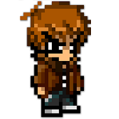
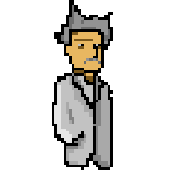
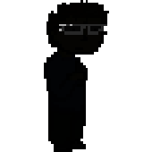
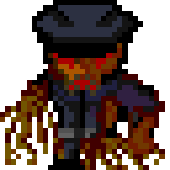
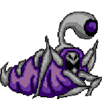
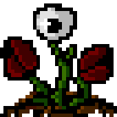

Grant Twitter
Grant, o experimento GS-14, es un chico solitario. Se siente más agusto con poca gente alrededor, pero adora los pequeños detalles, pararse a observar lo que le rodea. Le cuesta entender a los demás, salvo a su amigo Shiloh, que parece entenderle demasiado.Suele buscar rincones aislados para disfrutar de sus libros por lo que se conoce al dedillo el laboratorio. Además, siempre se encuentra con todo tipo de cosas. Ha aprendido a absorber la energía psiónica de los seres de su alrededor y a proyectar la suya propia.

El Científico Twitter
Genetista de gran renombre por méritos propios. Visionario y grandilocuente. Más racional que sentimental, de mirada soberbia. Ama a su mujer casi más de lo que ama a la ciencia y está dispuesto a hacer lo que sea por curarla. Vigila el laboratorio entero para observar cómo evolucionan y se desarrollan sus “experimentos”.
Shiloh Twitter
Inteligente y servicial. Es un chico alegre que tiende a anteponer el bien de los demás al suyo propio. Se hizo amigo de Grant debido a su simpatía, fue el único que salió a defenderle cuando los demás niños se metían con él. Siente por Grant mucho más cariño del que reconoce. Pero su gran pasión son los videojuegos, vivir las aventuras que en laboratorio no puede. Su habilidad consiste en leer los pensamientos ajenos y debido a ello casi siempre lleva cascos. No viene mal escapar de ellos de vez en cuando.
Rhino Twitter
Uno de los chicos nacidos en el laboratorio. Orgulloso de sus habilidades, siempre intenta superar a todos y tiende a reírse de los que pierden ante él. Le encanta sentirse en forma y siempre está practicando cualquier deporte. Su habilidad se basa en una estructura ósea más robusta y una gran dureza en la piel, sumado a su gran fuerza y velocidad puede ser un adversario temible.
Guardia Infectado Twitter
Cuando El Científico creó intentó probar un prototipo de cura con varios guardias voluntarios no pensó que acabarían siendo infectados y mutados. Finos tentáculos recubrieron su cuerpo y su cerebro quedó nublado a un simple instinto de alimentarse de otras seres humanos para poder infectarlos.
Atrópodo Explosivo Twitter
¿Qué puede ser peor que insectos mutantes enormes? Que disparen crías explosivas y se dediquen a reventarlo todo.